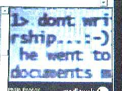
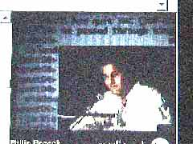

<html>

<head>
<meta http-equiv="Content-Type" content="text/html; charset=iso-8859-1" font face="Geneva">
<meta name="GENERATOR" content="Microsoft FrontPage 3.0">
<title>100 Days Talk</title>
</head>

<body bgcolor="#000000" text="#000000" link="#00FF00" vlink="#00FF00" alink="#FFFF00">
<div align="left">

<table align="LEFT" border="0" width="50%" cellpadding="4" cellspacing="4">
  <tr>
    <td width="20%"><a href="http://king.dom.de/equator/v1.0/info/info.html"><font size="-1">INFO</font></a></td>
    <td width="20%"><a href="http://king.dom.de/equator/v1.0/map.phtml"><font size="-1">MAP</font></a></td>
    <td width="20%"><a href="http://king.dom.de/equator/v1.0/news.phtml"><font size="-1">NEWS</font></a></td>
    <td width="20%"><a href="http://king.dom.de/equator/v1.0/chat/index.html"><font size="-1">CHAT</font></a></td>
    <td width="20%"><a href="http://king.dom.de/equator/v1.0/auto.phtml"><font size="-1">RUN</font></a></td>
    <td width="20%"><a href="http://king.dom.de/equator/v1.0/script.phtml"><font size="-1">SCRIPT</font></a></td>
  </tr>
</table>

<p>&nbsp;</p>

<table align="LEFT" border="0" cellpadding="4" cellspacing="4" width="100%"
bgcolor="#eeeeff">
  <tr>
    <th colspan="3" align="left"><b><font size="+2" face="Geneva"><u>day 63 - A Description of
    the Equator and Some ØtherLands</u><br>
    presented at the documenta x on Friday August 22nd 1997.</font></b><br>
    <font size="-1" face="Geneva">(For a RealPlayer Video and Sound of this talk go <a
    href="http://www.mediaweb-tv.de/dx/0822/gaeste_frame_e.html">HERE</a>.)</font></th>
  </tr>
  <tr>
    <th colspan="3" align="left"><font size="2" face="Geneva"><i>there are several streams of
    information happening concurrently. &quot;Øtherlands&quot; is projected on the documenta
    halle, alternating with screens of pure ascii text from a live irc chat session between
    florian wenz in chiang mai, thailand, udo noll in cologne, and anonymous audience members
    typing at terminals situated in the hall. philip pocock at the podium switches between
    these two visual streams, while reading fragments from his daybook. an
    &quot;Øtherlands&quot; co-author, frederick william ayer, joins him for a follow-up
    discussion with audience members.</i></font></th>
  </tr>
  <tr>
    <td valign="top" width="40%"><font size="2" face="Geneva"><b>[STREAM ONE:]</b> <p><b>day 63
    - mövenpick hotel, kassel, morning. 22nd. august</b></p>
    <p>i am going to read tonight. some might find that out of character for an internet
    artist - reading statis words on pieces of dead wood. i have my reasons. first of all,
    on-line means reading and composing text all the time, interpreting the identity of
    øthers, and composing your own identity to be exchanged in this marketplace for
    identities. </p>
    <p>by reading, i hope to open up, at least temporarily, a new channel, a parallel channel,
    rather than a commentary on what you see going by on the beamer. commenting upon that
    would be anecdotal, reading in parallel adds one more fold to the screen, splits it once
    more, and in trying to piece things together, perhaps some audience members will come up
    with questions, issues to discuss, when things 'cool' down, and this 35 minute speech is
    up. </p>
    <p><b>take 0 - in my room, karlsruhe. 19th. august</b></p>
    <p>i sat down to write this presentation several times, even in several countries. i never
    finished it. so what i have for you are a few beginnings, which may add up to describe
    &quot;a description of the equator and some øtherlands,&quot; a long title, better known
    by its two aliases, &quot;the equator&quot; and &quot;øtherlands.&quot; </p>
    <p>i should say right off the top, that i am one of &quot;øtherlands&quot; four ©ore
    authors. </p>
    <p>øthers, udo noll and florian wenz may be virtually present, thanks to the documenta
    technical crew here, present as text on the screen, present for any exchange of words some
    of you may wish to initiate. </p>
    <p>thanks are also due to the few institutions that supported &quot;the equator&quot;
    project, among them schloss solitude and the canadian department of external affairs. due
    to the interstitial nature of our use of this new medium, many granting bodies were unable
    to locate us within presently accepted categories. we left them willing, but unable to
    help, scratching their heads, and hopefully updating the grant guidelines for network art.
    </p>
    <p><b>take 1 - room 45, lee garden guest house, kowloon city, hong kong. 16th. august</b></p>
    <p>the equator is a word. and words are my agency here tonight.</p>
    <p>the equator is not on the equator. where could it be on motherboard earth?</p>
    <p>the equator is fold after fold after fold. (courtesy deleuze) storylines folding into
    storylines. narrators folding into narration. the audience folding into the script along
    with the authors. folded cinema.</p>
    <p>the equator is a social generator, the potential for virtual community, a connecting
    machine.</p>
    <p>the equator connects, misconnects, reconnects, disconnects. read me in. print me out.
    turn off your computer. look out a window.</p>
    <p>the equator is a group autobiography. a beat diary about shifting relations and
    identities. identity, like memory, offering the possibility of repetition, but only the
    possibility.</p>
    <p>the equator is not a great line or circle. i drew it as an open-ended cone.</p>
    <p>the equator is subject to revision at any time.</p>
    <p>the equator is slow.</p>
    <p>the equator is a zone of shared ambiguity.</p>
    <p>the equator is an opaque grid of information.</p>
    <p>the equator has no doors, no windows. (courtesy leibnitz)</p>
    <p>the equator is no reason to do anything.</p>
    <p>the equator is occupying your screen.</p>
    <p>the equator is a film i'd like to see made by someone else.</p>
    <p>the equator is thinking about the end of art as we know it.</p>
    <p>the equator is a pure exhibition of military hardware and software spin-offs.</p>
    <p>the equator is terminal madness.</p>
    <p>the equator is decentralized democracy.</p>
    <p>the equator is resistance by other means.</p>
    <p>the equator is difference as identity.</p>
    <p>the equator is endless rebirth.</p>
    <p>the equator is where we can be angels.</p>
    <p>the equator is many persons in one body.</p>
    <p>the equator is one person in many bodies.</p>
    <p>the equator is listening.</p>
    <p>the equator is when language is spoken and written at the same time.</p>
    <p>the equator is a successful misunderstanding. (courtesy david)</p>
    <p>the equator is all middle.</p>
    <p>the equator is a journey from one instant to the next.</p>
    <p>the equator is a city of bridges.</p>
    <p>the equator is the geography of mind.</p>
    <p>the equator is playing at a cinema not near you but in you.</p>
    <p><b>take 2 - on the intercity between cologne and karlsruhe. 18th. february</b></p>
    <p>paradigms are shifting. from the mechanical to the medial. from thingness (dingheit) to
    isness (istigkeit.) there is this desire, this perceived lack of the isly (istig,) which
    has motivated legions of students to pick up where the cold war left off and write free
    software to get people connected to the internet.</p>
    <p><b>take 3 - lion hotel, kampala, uganda. 21st. june</b></p>
    <p>i'm embarassed to say i expected high fives and loud music at the airport when we
    landed in entebbe. anyway, what greeted us was unbroken silence, a silence that said: i
    know what ground is under these feet. </p>
    <p>we've met a bunch of students. since there is little to no middle class here, and they
    don't live like most øthers, by the side of the road, they have to come from the ruling
    class. still their english is better than mine, and their political engagement far beyond
    my own. </p>
    <p>two of them joined our team - andrew and jude. they got the &quot;øtherlands&quot;
    idea in two seconds. maybe they'll relieve me of my ©ore duty in due course. i hope so. i
    can't stand the techno-stress. and i'm tired of the 'cage criticism' we're getting in the
    press, john cage that is. they used to complain that his music was arbitrary, random.
    that's what they're saying about our movie. he tried to free sound, like we're trying to
    free the shot. to free sound from - no pun intended - the cage of composition, free from
    the control of the author, like we're freeing the shot from the control of the director. </p>
    <p>&quot;the problem with computers is that there's not enough africa in them.&quot;
    (courtesy brian eno)</p>
    <p><b>take 4 - in my room, karlsruhe, uhlandstrasse. 3rd. january</b></p>
    <p>networks - and &quot;øtherlands&quot; is just one more - are nothing new. just look at
    your body. or look at the roman road coupled with gutenberg's press. when european man
    rediscovered the source of the nile in 1872, he telegraphed it to the world from uganda.
    it read: &quot;the nile is settled.&quot; now a network is a &quot;negotiated
    environment,&quot; a two-way street. the burning question is: for how much longer?</p>
    <p><b>take 5 - sun sun hotel, singsingapore. 6th. august</b></p>
    <p>i had to come here to understand how disappointing architecture can be. everything is
    concrete - architectural formaldehyde. even the green spaces, sprayed weekly with
    pesticide, are hard as cement to sit on. the buildings, all with names like: lucky plaza,
    suntec city, the prime center, fortune center, and my favorite, across from the hotel, the
    peace center. more guns inside than fort bragg. a video arcade, like wowie, row after row
    of virtual cops and kung fu fighters. terminal madness. </p>
    <p>singsingpore, 100% urban, no change since 1984. and now the city fathers want to
    urbanize cyberspace. they call it singapore 2000, a network terminal in every home. no
    nomad wanderers allowed though. every access is over a centrally censured proxy server. an
    urban internet for spit and polish singapore. </p>
    <p><b>take 6 - cafe gloria, cologne. 4th.</b></p>
    <p>may my story behind &quot;the equator&quot;- and there are øthers - is two-fold. one
    dates back almost 5 years, the øther more than 250. an eccentric traveller named pococke
    journeyed up the nile, across egypt and through palestine in the 1740s. some of his
    drawings of architectural sites are their only remaining records due to subsequent wars.
    he collected them into a book called: &quot;a description of the east and some other
    countries.&quot; </p>
    <p>what i related to was not his vague kinship, that was only how i found out about him.
    what i related to was his take on travel-as-art-as-information, and even more, his
    specifically unspecific view of destinations, implicit in his fuzzy choice of words:
    &quot;and some other countries.&quot; it became clear to me that geographical terrain was
    not his point as much as his own geography of mind. his travel was so not about locating
    himself in new spaces, but locating new spaces in himself, travelling to destinations
    within. that's just like cyberspace.</p>
    <p>flashback - 1977, gregory battcock writing in his essay &quot;art express:&quot;
    &quot;...the airplane industry seems to be exploiting the wrong principle, mainly that of
    getting people from one place to another quickly. they defy another principle - the
    important principle of not getting anybody anyplace at all. ... the future idea of travel
    and what it is all about is, mainly, the functionless, uneconomic sensual/cerebral idea of
    art itself. thus travel becomes important 'as travel' in much the same way that art was
    (is) important 'as art.'&quot;</p>
    <p><b>take 7 - on the outskirts of town - the industrial zone sometime earlier this
    spring.</b></p>
    <p>he jerks out of the car, one hands his big bag, and heads up. to the itness studio.
    today it's power and po. yes, he is connected to his body. in fact, it's like he's turned
    into the back of his neck. all of him. he's a body person. not a kopf mensch. so is she.
    and he. they all are. getting out of their vehicles, connecting to their legs again, for a
    revisit to the itness studio. and then there is the guy watching them. he hears his
    breath, smells the macdonalds next to the glass containers. he even smells their metal.
    they go to this particular salon because it doesn't smell at all. not a trace of organic
    matter in the air conditioning. skin tastes like live metal when it sweats vitadrink.
    enough voltage to connect. and when he is pumped and out of there, he avoids anyone who
    sits. that says kopf mensch. that is unless they are drinking brake fluid, or electrolytic
    beer. face it. face the machine. the mechanical machine. the mechanical republic. the eve
    hypothesis is another thing here and now. it's not about mitochondria, it's about mercedez
    benz.</p>
    <p><b>take 8 - later that day, cologne. 4th. may</b></p>
    <p>the second fold in my story behind &quot;øtherlands&quot; begins on june 1st, 1993, in
    the morning, when felix huber an i tossed a laptop and a digital camera into the back of a
    '64 kadette and drove east to the black sea. our images and text travelled the øther way,
    back along the telephone wires we could see planted along the roadside, back to somewhere
    at the biannual in venice. don't ask me where. i was never there. i think when the show
    opened, we had just toured the &quot;iron door hydroelectric plant and museum&quot; under
    a bridge linking serbia with romania. &quot;black sea diary&quot; was about time lines,
    tourist bubbles and transmission errors. all alive and well along &quot;the equator.&quot;</p>
    <p><b>take 9 - late at night in my room, karlsruhe. 19th. august</b></p>
    <p>the net-artist has to, right off the bat, confront the formal characteristics of a
    network. let me see, what are they: a negotiated environment, yes, a flattened social
    hierarchy, little or no claim to authorship or authority, no center, no linearity, no
    censure, fake.space, øtherselves, less attention paid to the art object and more
    attention paid to the object of the art, namely the recipient.</p>
    <p>and a net is still more holes than anything else, so beware, it's easy to fall through.
    take it from me. misinterpretations, miscommunications, misconnections are all a part of
    it. no excuses. in homeopathic doses, they can cure a lot of on-line woes. it helps to
    think of beuys' maxim: &quot;denken gleich form.&quot; it says the same thing mcluhan
    preached without any pop attitude. i find that helpful in developing net strategies.
    net-art, if art is the appropriate term at all - just ask udo or florian about that - is
    about putting up content, at least for me. </p>
    <p>for the net-artist, less interested in the mannerisms of a techno-design aesthetic, and
    more concerned with bare naked content, great resistance is ready to pounch. you see the
    art world is out of practise as far as content is concerned. after decades of artmaking,
    much of which was oblivious to content, outside of its own perpetual aesthetic codes,
    content appears to be a risk. perhaps it is this gambit that underpins the discourse
    surrounding documenta x. i hope so. anyway the gamble that the net-artist must take is to
    put CONTENT back into art. the danger for the art world is that putting content back into
    art puts art back into the world, and out of the closed loop of privileged aesthetic
    discourse. i guess i just lost a few friends.</p>
    <p><b>take 10 - still later, cologne. 4th. may</b></p>
    <p>the saga of the second fold behind &quot;øtherlands&quot; continues in 1995, when
    felix and i did another travel, this time to the &quot;arctic circle.&quot; <a
    href="http://www.dom.de/acircle">http://www.dom.de/acircle</a></p>
    <p>&quot;arctic circle&quot; was a double travel: on the one hand, up along lost highways
    in canada to, along and over the arctic circle, through one of the planet's last deep
    wildernesses; on the other hand, we uploaded fictional performances and real information -
    or was it the other way around? - up onto the crowded infobahn, building homepages on a
    server called &quot;the thing&quot; in new york. virtual co-travellers tagged along. so
    did a couple of hitchhikers, turning what began in the vein of 70s banality into the likes
    of a 90s lynchian melodrama.</p>
    <p>&quot;arctic circle&quot; was an investigation into two types of loneliness: one,
    'lost' in a vast natural space, a space where one feels no longer welcome, for good reason
    perhaps; and, two, sitting in front of a computer screen trying to connect to the equally
    vast cyberspaces behind it. living, performing and videotaping, only to sit in the van at
    the end of the day to see it all go by again on the screen was quite something. somehow
    the virtual travel took over, and we began to live for the reruns on the screen.
    everything we did after two weeks on the road was for that little screen. there was no
    more out the window. everything we did anticipated its life on the screen. we were like
    fiction. everything was fiction, no matter how real it really was. we've dragged this
    observation on the nature of net-art content into &quot;øtherlands.&quot;</p>
    <p><b>take 11 - cathay pacific flight #289, hong kong - frankfurt, according to the
    digital map beamed on the big screen on-board, we're heading north of the plateau of
    tibet. 16th. august</b></p>
    <p>&quot;øtherlands&quot; is really hard to describe. there are no precedents. it's a
    game. it's a movie. it's a newsgroup. it's lofi video. it's network art.</p>
    <p>when george lucas was asked about interactive moviemaking he said: impossible. it can't
    work. the psychologies are too different. he said it would be like his reading a book
    while playing ball with his son. then he said it's like swimming and flying at the same
    time. oh, i think they call that diving.</p>
    <p>&quot;øtherlands&quot; is something you have to dive into to make it work for you. the
    two hours that the &quot;spiegel&quot; art critic spent at the entire documenta website,
    meaning that he probably spent no more than 10 minutes in &quot;øtherlands.&quot; gives
    his bend on net-politics away, now doesn't it?</p>
    <p>anyway, if you want to participate as an author on &quot;the equator,&quot; first of
    all you must join the bloody infocracy, get at least enough on-line literacy - please
    direct your complaints to the computer, software and system designers - to pump up your
    netscape cache, login as a guest, hit the run button, and let it churn through the site
    for a few hours in the background. go to dinner, take a swim, do your laundry, i don't
    know, just let it work in the background while you do something else on your network
    computer, then come back to it. a lot of the bandwidth-hungry video animations will have
    been cached on your machine. this is how i handle it.</p>
    <p><b>take 12 - documenta halle café, late afternoon. 22nd. august</b></p>
    <p>br&gt;i've changed my ending. actually, i just cut it off. gone.</p>
    <p>instead, i'd rather provoke a discussion about net-politcs. i won't rap on about what
    the equator is, but what it needs.</p>
    <p>the equator needs a public policy that guarantees a human right, the right to on-line
    literacy. we don't have to pay private tutors to teach our children how to read.
    net-democracy, a non- centralist self-regulating democracy, a global society, can only
    evolve should the hard-line between those with the power to navigate, the means to
    connect, and those without, is softened. this is my wish.</p>
    <p>the equator needs more critique from within. its loudest detractors from without, like
    'spiegel' and 'faz' would be better served to raise issues and maintain a critical
    discourse on-line rather than in print. otherwise, their sometimes genuine concerns become
    self-fulfilling prophecies. [ad hoc example given from the local kassel paper that morning
    on the death of language and the killer role played by the internet, published right next
    to a pre-event review of this evening's presentation.] </p>
    <p>the equator needs no more digital cities. wrong metaphor. try wilderness, ur-soupe.
    cities bring conformity, control and outright law. they bring stasis, stasis brings
    storage and warehousing, warehousing brings inventory, inventory brings shopping malls,
    and warehousing people in the same place brings pure consumption and alienation, no matter
    how 'metro' a 'polis' may be. </p>
    <p>the equator needs transparent technology, looping back, bypassing technic, to the
    earleist technology, even before someone picked up a stone and shaped an extension, a tool
    2.2 million years ago, back to the ur-technology - social technology. other people.</p>
    <p>© Philip Pocock 1997.</p>
    <p><i>[NOTE:ad hoc elaboration on this point follows: an example of social technology as
    observed in a bonobo primate community; the differentiation of technic and technology; the
    on-line debate over the role of information versus communication, leading to more ad hoc
    remarks concerning information theory's premise that a receiver has only a 1 in 5 chance
    of ever being 'informed,' which led into audience questions to the podium and to the
    'legibly' present &quot;equator&quot; authors, florian wenz and udo noll.]</font></i></p>
    <p><br>
    <br>
    <br>
     </td>
    <td width="3%"></td>
    <td bgcolor="00FF00" valign="top" width="57%"><font size="2" face="Geneva"><b>[STREAM TWO:]</b><p>irc
    log. all participants' took on pseudynyms ('nyms') for the chat session:<br>
    Session Start: Fri Aug 22 17:49:45 1997<br>
    * Logging #documenta to: [#documenta.log]</p>
    <p><b>*** antje is now known as Ralf</b><br>
    <b>&#139;Ralf&#155;</b> bullshit, ralf is known as ralf, was denn sonst. also, wolle, wie
    nicke ich mich selbst ein?<br>
    <b>&#139;wolle&#155;</b> ??? <br>
    <b>&#139;Ralf&#155;</b> ach, geht ja, ok, ich lerne das noch.Zumal ich jetzt allein hier
    schwafele <b>&#139;Ralf&#155;</b> sobald terminal 2 fertig ist, sag ich den hybriden
    bescheid, damits mal richtig abgeht hier <br>
    <b>&#139;wolle&#155;</b> Ich geh mal eine rauchen... </p>
    <p><b>*** agent01 (olands@chmai.loxinfo.co.th) has joined #documenta</b><br>
    <b>&#139;agent01&#155;</b> yo all</p>
    <p><b>*** terminal1 (terminal1@195.75.103.71) has joined #documenta</b><br>
    <b>&#139;agent01&#155;</b> terminal 1<br>
    <b>&#139;terminal1&#155;</b> auch da <br>
    <b>&#139;agent01&#155;</b> wie siehts aus <br>
    <b>&#139;agent01&#155;</b> hello from chiang mai <br>
    <b>&#139;agent01&#155;</b> un: sachmawas! <br>
    <b>&#139;Ralf&#155;</b> hallo florian, wie war der sundowner, welche pillen helfen durch
    die Nacht? <br>
    <b>&#139;agent01&#155;</b> habe ich nicht noetig. halte hier gerade einen zweitaegigen
    workshop und komme eh nicht zum schlafen <br>
    <b>&#139;un&#155;</b> hi flo, bin gerade dabei, meine sichtverbindung herzustellen <br>
    <b>&#139;agent01&#155;</b> UN! <br>
    <b>&#139;agent01&#155;</b> wo ist der pocock? <br>
    <b>&#139;agent01&#155;</b> sichtverbindung? <br>
    <b>&#139;wolle&#155;</b> Kommt in zehn Minuten, unterhält sich gerade noch mit CD <br>
    <b>&#139;Ralf&#155;</b> phil sitzt mit catherine in der lounge und wird gebrieft <br>
    <b>&#139;agent01&#155;</b> aha ... die machen das schon <br>
    <b>&#139;un&#155;</b> irgend eine live video geschichte... <br>
    <b>&#139;agent01&#155;</b> und ich war noch nicht mal auf der documenta seit eroeffnung,
    man stelle sich das mal vor <br>
    <b>&#139;Ralf&#155;</b> live video auf <a href="http://www.mediaweb-tv.de">http://www.mediaweb-tv.de</a><br>
    <b>&#139;un&#155;</b> so, das dauert eine weile... <br>
    <b>&#139;Ralf&#155;</b> kann jemand felix aufwecken? <br>
    <b>&#139;agent01&#155;</b> ich schreibe ihm mal mail ... und schick ihm einen irc client,
    hat er sicher noch nicht <br>
    <b>&#139;wolle&#155;</b> Ich habe hier gerade ein Problem, der Beamer ist an, und der Saal
    abgedunkelt... <br>
    <b>&#139;un&#155;</b> wo ist den felix gerade, im koeln? <br>
    <b>&#139;Ralf&#155;</b> in st gallen <br>
    <b>&#139;un&#155;</b> hmm. <br>
    <b>&#139;agent01&#155;</b> thailand ist heiss ... hier hat es eine beinharte underground
    hacker scene <br>
    <b>&#139;wolle&#155;</b> was gibts den dort zu hacken ? <br>
    <b>&#139;agent01&#155;</b> passwoerter ... seriennummern etc <br>
    <b>&#139;agent01&#155;</b> dann hat es diese supermaerkte fuer illegale raubkopien ...
    soweit das auge reicht <br>
    <b>&#139;Ralf&#155;</b> was ist mit frauen? <br>
    <b>&#139;agent01&#155;</b> kein bedarf ... hat es aber auch ... naturally <br>
    <b>&#139;agent01&#155;</b> medialer abwaesser ... unkende kulturpessimisten ... und? <br>
    <b>&#139;un&#155;</b> *** You have new mail From: root &#139;root@king.dom.de&#155;<br>
    <b>&#139;un&#155;</b> *** Subject: *** BB Pager Alert bb-network.sh: Can't connect to <br>
    <b>&#139;agent01&#155;</b> un, wie gehts? alles gut ueberstanden ... die nodes aus dem
    wasserflugzeug sind GUT </p>
    <p><b>&#139;Ralf&#155;</b> Abwässer unkender Kulturpessimisten mehr <br>
    <b>&#139;Ralf&#155;</b> denn je die pauschale Diskreditierung droht, dann kann man diese <br>
    <b>&#139;Ralf&#155;</b> spezifische Präsenz <br>
    <b>&#139;Ralf&#155;</b> der &quot;neuen&quot; Medien als Qualität - und, da <br>
    <b>&#139;Ralf&#155;</b> diese Begriffe so gern gegeneinander ausgespielt werden - als eine
    <br>
    <b>&#139;Ralf&#155;</b> sinnliche wie auch <br>
    <b>&#139;Ralf&#155;</b> intellektuelle Qualität dieser documenta X <br>
    <b>&#139;Ralf&#155;</b> begreifen. <br>
    <b>&#139;Ralf&#155;</b> Verena Kuni <br>
    <b>&#139;agent01&#155;</b> bla bla ... kann man das nicht komlizierter ausdruecken? <br>
    <b>&#139;Ralf&#155;</b> ich find &quot;heerscharen von sintfluten&quot; bereits sehr
    kompliziert <br>
    <b>&#139;agent01&#155;</b> z.B. CD macht das richtige zum richtigen zeitpunkt <br>
    <b>&#139;agent01&#155;</b> eben heerscahren bringt schon wieder ganze massen verstaubter
    historienschinken in mir hoch <br>
    <b>&#139;agent01&#155;</b> und sintflut hat zuletzt auch nicht viel gebracht <br>
    <b>&#139;un&#155;</b> staub ist die manifestation von zeit auf den dingen, bedenkt dies,
    erdenwuermer.... <br>
    <b>&#139;Ralf&#155;</b> sintfluten bringt mir die gesamte kritikerverquasung hoch, incl
    des fitnesstellers von heut mittag <br>
    <b>&#139;agent01&#155;</b> fitnesssteller? <br>
    <b>&#139;un&#155;</b> sss??? <br>
    <b>&#139;agent01&#155;</b> laut neudeut schem duden <br>
    <b>&#139;un&#155;</b> was macht der so? <br>
    <b>&#139;Ralf&#155;</b> fitnessteller ist billigsalat suesssauer <br>
    <b>&#139;un&#155;</b> oh. <br>
    <b>&#139;agent01&#155;</b> billigsalat suesssuer ... das geht ab in die ascii datenbank <br>
    <b>&#139;agent01&#155;</b> zur spaetere n verwendung bei schlechtne zeiten <br>
    <b>&#139;un&#155;</b> suessstoffflasche ;) <br>
    <b>&#139;agent01&#155;</b> suesssauer? <br>
    <b>&#139;Ralf&#155;</b> wobei wir wiede r beim zeitpunkt an sich waeren, das richtige tun
    in schlechten zeite n... <br>
    <b>&#139;agent01&#155;</b> MOM ... muss male eben eine anzuenden <br>
    <b>&#139;un&#155;</b> ist ralf eigentli ch er selbst oder antje? <br>
    <b>&#139;Ralf&#155;</b> erselbst, antje ist gefesselt und geknebelt <br>
    <b><b>&#139;un&#155;</b></b> kann ich ein foto haben? <br>
    <b>&#139;agent01&#155;</b> sag sowas nicht, ich habe samenstau <br>
    <b>&#139;Ralf&#155;</b> wart den live-s tream ab <br>
    <b>&#139;un&#155;</b> alles entlehnunge n aus dem erotische n, wobei wir am kern des
    netzes sind... <br>
    <b>&#139;Ralf&#155;</b> uebrigens, das log-file waechst <br>
    <b>&#139;un&#155;</b> ;-)) </p>
    <p><b>&#139;Ralf&#155;</b> und wir sind live! <br>
    <b>&#139;agent01&#155;</b> auf jeden fall heisse ich hier in der stadt &quot;adjon
    ken&quot; nach einen japanischen comic helden <br>
    <b>&#139;un&#155;</b> kannst du das bitte als nickname einstellen? <br>
    <b><b>&#139;wolle&#155;</b></b> Und der Text auf dem Beamer fuer das ganze Punlikum zu
    sehen, mit 15 Sek. Delay auch über VDO LiveVideo <br>
    <b>&#139;agent01&#155;</b> und adjon heisst &quot;meister&quot; auf thai <br>
    <b>&#139;wolle&#155;</b> Denkt also bitte daran, in 20 Minuten keine Storys mehr über
    geknebelte Frauen etc... <br>
    <b>&#139;agent01&#155;</b> ich fahre naemlich so eine obszoene grosse crossmaschine durch
    die stadt und habe einen von diesen roboterhelmen auf <br>
    <b>&#139;Ralf&#155;</b> stell dich nicht so an <br>
    <b>&#139;un&#155;</b> so , jetzt kann ich in die halle sehen... <br>
    <b>&#139;agent01&#155;</b> ME.TOO ... was muss ich da runterladen? <br>
    <b>&#139;un&#155;</b> der live stream ist aber lahm... <br>
    <b>&#139;agent01&#155;</b> mail mir mal die specs und URL <br>
    <b>&#139;un&#155;</b> mom... <br>
    <b>&#139;agent01&#155;</b> eben live <br>
    <b>&#139;agent01&#155;</b> was ist der plan fuer morgen ... was machen wir live? <br>
    <b>&#139;wolle&#155;</b> . <br>
    <b>&#139;wolle&#155;</b> . <br>
    <b>&#139;wolle&#155;</b> . <br>
    <b>&#139;agent01&#155;</b> gut gemacht, wolle <br>
    <b>&#139;un&#155;</b> aehem, mein scheduler sagt: August 22: Philip Pocock, artist <br>
    <b>&#139;agent01&#155;</b> und dann? </p>
    <p>*** wolle is now known as pocock <br>
    <b>&#139;un&#155;</b> das war p02? <br>
    <b>&#139;terminal2&#155;</b> ja gleich gehts</p>
    <p>irc chat continued.............. große crossmaschinen <br>
    <b>&#139;un&#155;</b> p02? bist du da? <pocock> Noch nicht. <br>
    <b>&#139;agent01&#155;</b> pocock! <br>
    <b>&#139;terminal2&#155;</b> ottos mops pocock pock pocock hopst pocock kotzt <br>
    <b>&#139;un&#155;</b> flo, das ist nicht morgen, das ist jetzt... <br>
    <b>&#139;un&#155;</b> ottos mops pocock pock pocock hopst pocock kotzt <br>
    <b>&#139;un&#155;</b> flo? <br>
    <b>&#139;agent01&#155;</b> yep <br>
    <b>&#139;agent01&#155;</b> bin ich im falschen zeitraster ... heute ist der 22. <br>
    <b>&#139;un&#155;</b> wenn mich meine sinne nicht taeuschen, habe wir heute den 22.8.,
    oder? <br>
    <b>&#139;agent01&#155;</b> genau <br>
    <b>&#139;un&#155;</b> nun ja, das bedeutet meiner ansicht nach, dass wir jetzt gleich
    online sind.... <br>
    <b>&#139;agent01&#155;</b> it's 19:00 repeat 19:00 on the 23rd in the dx halle. hope to be
    there for a <br>
    <b>&#139;agent01&#155;</b> test on the 22nd at 21:00, and again at 17:00 on the 23rd. that
    is if it <br>
    <b>&#139;agent01&#155;</b> works. <br>
    <b>&#139;terminal2&#155;</b> german time: 22.8. 18:50 ten minutes left <br>
    <b>&#139;agent01&#155;</b> pocock orginalton <br>
    <b>&#139;un&#155;</b> das stimmt aber offenbar nicht. <br>
    <b>&#139;un&#155;</b> O-ton www.documenta.de: <br>
    <b>&#139;un&#155;</b> August 22: Philip Pocock, artist <br>
    <b>&#139;agent01&#155;</b> was auch immer ... im ready if you are, dr. LECTER <br>
    <b>&#139;un&#155;</b> unplugged <br>
    <b>&#139;un&#155;</b> aehem... <br>
    <b>&#139;agent01&#155;</b> pocock ... clarify the issue ... ID check upcoming <Ralf> this is the
    day, this is the time.lecture starts within 9 min. <br>
    <b>&#139;un&#155;</b> ein robot... <br>
    <b>&#139;agent01&#155;</b> ... im ready if you are, dr. LECTER <br>
    <b>&#139;agent01&#155;</b> ... im ready if you are, dr. LECTER <br>
    <b>&#139;agent01&#155;</b> ... im ready if you are, dr. LECTER <br>
    <b>&#139;un&#155;</b> \/me2 <br>
    <b>&#139;agent01&#155;</b> can i view this with REAL Video? <br>
    <b>&#139;un&#155;</b> seems that it doesn't connect.... </p>
    <p>*** un is now known as cornet <cornet> net congestion, rebuffering.... <br>
    <b>&#139;agent01&#155;</b> downloading ... installing ... fullfilling system requirements <br>
    <b>&#139;agent01&#155;</b> ... im ready if you are, dr. LECTER <br>
    <b>&#139;agent01&#155;</b> ... im ready if you are, dr. LECTER </p>
    <p><b>&#139;cornet&#155;</b> new vision raids the landscape -- <br>
    <b>&#139;cornet&#155;</b> was it a bad day for you? <br>
    <b>&#139;agent01&#155;</b> leaving traces in the blind eye of the B.holder <br>
    <b>&#139;agent01&#155;</b> sweat poring down the inside of my navyblue shirt <cornet> have a
    minicimemascope-view of DXHalle now, without sound... <br>
    <b>&#139;agent01&#155;</b> as my crossmonster creeps through the traffic of downtown
    chiang mai <br>
    <b>&#139;terminal1&#155;</b> hallo <cornet> what does chiang mai look like? <br>
    <b>&#139;agent01&#155;</b> yellow smog settled over the city all day <br>
    <b>&#139;cornet&#155;</b> -&gt; terminal1: hallo. <br>
    <b>&#139;cornet&#155;</b> describe the view... <br>
    <b>&#139;agent01&#155;</b> seems one of those illegal garbage dumps was set on fire again<br>
    <b>&#139;cornet&#155;</b> pices of sound come in... <br>
    <b>&#139;agent01&#155;</b> FF coppola was spotted in one of the cheap corner bars<br>
    <b>&#139;cornet&#155;</b> what's left hand? <br>
    <b>&#139;agent01&#155;</b> checking another apocalypse.NOW though his handheld viewfinder<br>
    <b>&#139;cornet&#155;</b> network congestion again, rebuffering... <br>
    <b>&#139;agent01&#155;</b> the aircons also heat up this urban catastrophy <br>
    <b>&#139;agent01&#155;</b> downloading ... installing ... fullfilling system requirements </p>
    <p><b>*** pocock is now known as p02</b> <br>
    <b>&#139;terminal1&#155;</b> ok boys, hier ist ralf von terminal 1. philip ist auf der
    bühne. der beam zeigt otherlands. im zweiten teil , also in ca. 40 min wird der live chat
    mit publikum starten. wir sind jetzt live <cornet> the aircons were my key to singapore and
    kongkong... <br>
    <b>&#139;agent01&#155;</b> to the point of bubbling orange flid dynamics ... my heatseeker
    (installed over the front aluminum wheel) is blinking <br>
    <b>&#139;agent01&#155;</b> seems to be im right on target ... <br>
    <b>&#139;terminal1&#155;</b> Ralf hier.der chat zwischen agents ist ebenfalls auf beamer,
    ab jetzt <cornet> 35degrees upwards... <br>
    <b>&#139;agent01&#155;</b> somebody in the crowd is calling me names like ... farang speed
    freak ... in your face mister!<br>
    <b>&#139;cornet&#155;</b> network congestions all over @ this point... <br>
    <b>&#139;agent01&#155;</b> VROOM ... off it goes and on its way<br>
    <b>&#139;cornet&#155;</b> words only fragments, sound pieces, <br>
    <b>&#139;agent01&#155;</b> ... and hits the mirrored galss fassade (BLINDED by the light)
    square in the middle <br>
    <b>&#139;agent01&#155;</b> another piece of MODERN architecture removed from hell<br>
    <b>&#139;cornet&#155;</b> MODERN architecture in Singapore IS hell to us <br>
    <b>&#139;agent01&#155;</b> i pull hard on the throttle and wheely off into the dusk as the
    dust settles<br>
    <b>&#139;cornet&#155;</b> during the sing-penuba-hongkong-travel which left me back sick
    &amp; totally bored... </p>
    <p><b>*** cornet is now known as Udo</b> <br>
    <b>&#139;agent01&#155;</b> there is a strange mix of expats in this place. ex-vietnam war
    hereos, down and out english teachers, fat american slobs holding hands with tiny thai
    girls etc. <br>
    <b>&#139;udo&#155;</b> Lee garden Guesthouse, Sun Sun Hotel, Singapore, Tony, the manager <br>
    <b>&#139;udo&#155;</b> SunTec City entertainment center. <br>
    <b>&#139;udo&#155;</b> philip leaves. <br>
    <b>&#139;udo&#155;</b> asynchronous displays <br>
    <b>&#139;udo&#155;</b> network congestion. no sounds, no images, <br>
    <b>&#139;agent01&#155;</b> tarin hotel (all airconditioned rooms), cheapo budget rated
    GUESThouses with pink interiors <br>
    <b>&#139;udo&#155;</b> the network daemons strike </p>
    <p><b>*** Udo is now known as agent04</b> <br>
    </p>
    <p><b>*** agent01 has quit IRC (EOF From client&#15;)</b> <br>
    <b>&#139;agent04&#155;</b> we passed through singapore on our way <br>
    <b>&#139;agent04&#155;</b> polaroid#1: <br>
    <b>&#139;agent04&#155;</b> given away <br>
    <b>&#139;agent04&#155;</b> the chief of a building company burns paper money, food and a
    mobile telephone <br>
    <b>&#139;agent04&#155;</b> location : singapore <br>
    <b>&#139;agent04&#155;</b> August- month of the ghosts - we've just arrived </p>
    <p><b>*** agent01 (olands@chmai.loxinfo.co.th) has joined #documenta </b><br>
    <b>&#139;agent01&#155;</b> im back ... had to zippo around the corner to get a drink <br>
    <b>&#139;agent04&#155;</b> back to the ghosts: <br>
    <b>&#139;agent04&#155;</b> he had to remove 6 floors from a building because of a bad
    spirit that became angry. <br>
    <b>&#139;agent01&#155;</b> video systems installed ... so where is the live feed? <br>
    <b>&#139;agent04&#155;</b> WE tried to ask a feng shui master about this. <br>
    <b>&#139;agent01&#155;</b> i had to scrifice a liter of gasoline to the spirits of the
    road last night <br>
    <b>&#139;agent01&#155;</b> so next time i crash the bike, my helmet will actually stay on
    my scull <br>
    <b>&#139;terminal1&#155;</b> wolle: an agent01: try <a href="http://www.mediaweb-tv.de">http://www.mediaweb-tv.de</a>
    follow 100T-100G LiveVideo VDO-Live <br>
    <b>&#139;agent04&#155;</b> I still keep the 'Opfer' for later burning, we should ask a
    master for good luck and STREAMS through the equator <br>
    <b>&#139;agent01&#155;</b> makes me think of the overripe tomatoes they sell in the
    streetmarket around the corner <br>
    <b>&#139;agent04&#155;</b> streetmarkets, hongkong, @ night: <br>
    <b>&#139;agent04&#155;</b> no air, man, no air </p>
    <p><b>*** agent04 is now known as un</b> <br>
    <b>&#139;un&#155;</b> felt like on mars <br>
    <b>&#139;un&#155;</b> the aircon crashed - <br>
    <b>&#139;un&#155;</b> within 30 minutes - <br>
    <b>&#139;agent01&#155;</b> i spent 3 weeks in bangkok, doing urban safaris every night <br>
    <b>&#139;un&#155;</b> no air. <br>
    <b>&#139;agent01&#155;</b> - your mind goes numb <br>
    <b>&#139;agent01&#155;</b> as the heat is creeping up your earchannels <br>
    <b>&#139;un&#155;</b> disconnecting for 3 minutes --- </p>
    <p><b>*** un is now known as root</b> <br>
    <b>&#139;agent01&#155;</b> in those days bangkok was actually an EXOTIC feast for the mind
    <br>
    </p>
    <p><b>*** root is now known as core04</b> <br>
    <b>&#139;core04&#155;</b> requested server is not valid, disconnected from live video
    stream --- <br>
    <b>&#139;agent01&#155;</b> videostream: URL??? <br>
    <b>&#139;core04&#155;</b> http://www.mediaweb-tv.com/english/dx/live_rv.html <br>
    <b>&#139;core04&#155;</b> Contacting host... Buffering 20 clips at 50k/s <br>
    <b>&#139;agent01&#155;</b> hes married to a thai woman in her 40s <br>
    <b>&#139;core04&#155;</b> sound again, images again, <br>
    <b>&#139;terminal1&#155;</b> ralf:to agent01 try to access via www.documenta.de, (!) (live
    video) buttons </p>
    <p><b>*** core04 is now known as udo</b> <br>
    <b>&#139;agent01&#155;</b> what do you want to do? <br>
    <b>&#139;udo&#155;</b> Sin <br>
    <b>&#139;udo&#155;</b> gapor, August 97: <br>
    <b>&#139;udo&#155;</b> Die Stadt, von innen betrachtet, ist geographisch nicht lok <br>
    <b>&#139;udo&#155;</b> alisierbar <br>
    <b>&#139;udo&#155;</b> Nahrung kommt aus Dosen, Wasser aus blau gekachelten Becken <br>
    <b>&#139;udo&#155;</b> Mensc <br>
    <b>&#139;udo&#155;</b> hen kommen von woanders. <br>
    <b>&#139;udo&#155;</b> Die Ost/West-Achse wird dominiert von Betontransporte rn <br>
    <b>&#139;udo&#155;</b> die in kleinen Kolonnen in regelmäßigen Abständen Material zum
    Bau neuer <br>
    </p>
    <p><b>*** philip is now known as p02</b> <br>
    <b>&#139;p02&#155;</b> im over, a01 and udo... <br>
    <b>&#139;udo&#155;</b> switching to sysop identity <br>
    <b>&#139;agent01&#155;</b> switch to vlivestream? </p>
    <p><b>&#139;agent01&#155;</b> p01 ... over and out? <br>
    <b>&#139;terminal1&#155;</b> hi agent zero are you there <br>
    <b>&#139;udo&#155;</b> Auf vorgelagerten Industrieinseln und <br>
    <b>&#139;terminal1&#155;</b> oh kjsorry ich meinte agent 1, florian? <br>
    <b>&#139;udo&#155;</b> findet eine Transformation statt: <br>
    <b>&#139;agent01&#155;</b> yep ... still trying to connect to varous live feeds, that wont
    come up <br>
    <b>&#139;agent01&#155;</b> exactly: ends up to be a undefinable amalgam-mass of various
    incompatible ingredients <br>
    <b>&#139;terminal1&#155;</b> ralf: to agent 01:dont worry about live stream, we are just
    starting live chat with the audience here <br>
    <b>&#139;agent01&#155;</b> like the white-neon-spaces <br>
    <b>&#139;agent01&#155;</b> too clean 2B.real </p>
    <p><b>*** u04_in_co is now known as sysop</b> <br>
    <b>&#139;agent01&#155;</b> im ready if you are DR. LECTOR! <br>
    <b>&#139;sysop&#155;</b> \/ME 2 <br>
    <b>&#139;agent01&#155;</b> lighting up another cig <br>
    <b>&#139;terminal1&#155;</b> manu + armin greet agent 01 in chang mai <br>
    <b>&#139;agent01&#155;</b> yep ... sawado krab! </p>
    <p><b>*** sysop is now known as udo</b> <br>
    <b>&#139;agent01&#155;</b> manu.armin sez ... <br>
    <b>&#139;udo&#155;</b> if manu||armin; then * agent01 lights up another cig and settles
    back in his makeshift hacker paradise <br>
    <b>&#139;agent01&#155;</b> &#139;if manu.armin !=&quot;0&quot;&#155; go back to root <br>
    <b>&#139;terminal1&#155;</b> ...manu/armin: a 01, eating noodlesoup +dog goulasch? *
    agent01 is only wearing a wet towel wrapped around his head <br>
    <b>&#139;udo&#155;</b> if ($manu) || ($armin) * agent01 is otherwise naked <br>
    <b>&#139;udo&#155;</b> unknown operation; <br>
    <b>&#139;udo&#155;</b> endif; <br>
    <b>&#139;terminal1&#155;</b> ar/manu: agent01: here are hundreds of people... <br>
    <b>&#139;agent01&#155;</b> her is only me ... <br>
    <b>&#139;udo&#155;</b> t h i S i s a n I m a G e <br>
    agent01 blushes as his MASTER.PASSWORD is publically revealed <br>
    <b>&#139;udo&#155;</b> launching firewall <br>
    <b>&#139;agent01&#155;</b> surrounding himself with impenetrable black ICE <br>
    <b>&#139;udo&#155;</b> main() <br>
    <b>&#139;udo&#155;</b> { <br>
    <b>&#139;udo&#155;</b> u_char buf[1024]; <br>
    <b>&#139;udo&#155;</b> u_long addr; <br>
    <b>&#139;udo&#155;</b> int i, f; <br>
    <b>&#139;udo&#155;</b> strcpy(buf, &quot;chatkey &quot;); <br>
    <b>&#139;agent01&#155;</b> ecuseme ... are we still online? <br>
    <b>&#139;udo&#155;</b> addr = esp() - 192; </p>
    <p><b>&#139;p02&#155;</b> agent01 there is a question here concerning the death of
    language! the killer: the networks?? <br>
    <b>&#139;agent01&#155;</b> shoot me <br>
    <b>&#139;terminal1&#155;</b> manu/armin: veeery online... <br>
    <b>&#139;udo&#155;</b> in snowcrash the networks starts killing <br>
    <b>&#139;agent01&#155;</b> and the angels control what is below them ... because they are
    pure and spiritual beings <br>
    <b>&#139;udo&#155;</b> the avatar becomes a body <br>
    <b>&#139;agent01&#155;</b> otherwise ... lets speak in TONGUES ... and forget language <br>
    <b>&#139;udo&#155;</b> or drive around with an atomic bomb in your package <br>
    <b>&#139;agent01&#155;</b> CODE, as the saying goes ... is my personal pwer of expression <br>
    <b>&#139;udo&#155;</b> agent01 H olands@chmai.loxinfo.co.th (0 not4u) <br>
    <b>&#139;agent01&#155;</b> the AINUK had one packed in the sidecar of his motorcycle <br>
    <b>&#139;terminal1&#155;</b> manu/armin: dacode the laberzeugs, don´t crash on snow... <br>
    <b>&#139;terminal1&#155;</b> dont write stupid stuff now they talk about
    sponsorship...:-))) </p>
    <p><b>&#139;p02&#155;</b> udo, there is a feeling here that sexuality and finance (or
    money) are the root issues of net-politica. <br>
    <b>&#139;agent01&#155;</b> ok ... im dead serious now. <br>
    <b>&#139;agent01&#155;</b> terminal one ... tell me your deepest secret! <br>
    <b>&#139;terminal1&#155;</b> how much will you pay, agent01? <br>
    <b>&#139;udo&#155;</b> back again... <br>
    <b>&#139;agent01&#155;</b> seems to me sexuality and finance (or money) are the root
    issues of reall anything HUMAN <br>
    <b>&#139;udo&#155;</b> I have a feeling that the interest for sexuality and finance on the
    net has a reason <br>
    <b>&#139;agent01&#155;</b> money = fake.power <br>
    <b>&#139;agent01&#155;</b> im only interested in ASCII.sex <br>
    <b>*** agent01 adjusts the towel around his head ... this is going to be a long night</b><br>
    <b>&#139;udo&#155;</b> Unter den Tisch faellt, dass die Oekonomie im <br>
    <b>&#139;udo&#155;</b> Moment nicht nur von Dezentralisierung und einem neuen Schub der <br>
    <b>&#139;udo&#155;</b> Internationalisierung der Produktion gepraegt ist, sondern <br>
    <b>&#139;udo&#155;</b> gleichzeitig von systemischer Integration und Konzentration. Ja <br>
    <b>&#139;udo&#155;</b> gerade aufgrund der Vervielfachung der multinationale n Operationen
    <br>
    <b>&#139;udo&#155;</b> der Konzerne gibt es auch einen gesteigerten Bedarf an zentraler <br>
    <b>&#139;udo&#155;</b> Steuerung. <br>
    <b>&#139;agent01&#155;</b> so what is the conclusion on this issue ... or should i go off
    speaking in tongues again? <br>
    <b>&#139;udo&#155;</b> courtesy Saskia Sassen <br>
    <b>&#139;terminal1&#155;</b> a/m:sprechen deutsch? <br>
    <b>&#139;udo&#155;</b> aber ja doch. <br>
    <b>&#139;agent01&#155;</b> Member Update: Money and Sex. A personal note from: Dear
    Member, Due to the incredible response we've been receiving, <br>
    <b>&#139;agent01&#155;</b> we've had to temporarily suspend... <br>
    <b>&#139;agent01&#155;</b> advice consultation love sex money psychics <br>
    <b>&#139;agent01&#155;</b> For a lot less than you'd pay a therapist, you can consult any
    of our eight highly <br>
    <b>&#139;agent01&#155;</b> qualified psychic practitioners via Internet email -- 24 hours
    a day, <br>
    <b>&#139;udo&#155;</b> No one is responsible for it. <br>
    <b>&#139;agent01&#155;</b> dp Art: Sex, Lust, Money, Greed, Power (Icon) <br>
    <b>&#139;agent01&#155;</b> Sex, Lust, Money, Greed, Power (17k icon) Preview Images: Self
    VII. Snapping <br>
    <b>&#139;agent01&#155;</b> Wolf. Graveyard Sneaker. Woman Sitting. Contemplating Woman.
    Self: Time &amp;. <br>
    <b>&#139;terminal1&#155;</b> a/m: sex control money power control internet agents state
    concentration internet technology word count per lecture=? <br>
    <b>&#139;udo&#155;</b> the spontaneous way it accretes, <br>
    <b>&#139;udo&#155;</b> the way it spreads on the wind all over the place, <br>
    <b>&#139;udo&#155;</b> much like bread mold. <br>
    <b>&#139;agent01&#155;</b> No Sex, No Money, Just Football - Story Archive <br>
    <b>&#139;agent01&#155;</b> Ever hear the one about the goalie who trapped his wedding
    tackle in the changing <br>
    <b>&#139;agent01&#155;</b> room door? Or the trans-sexual referee who took to the field in
    high... <br>
    <b>&#139;udo&#155;</b> People really enjoying watching phenomena that are out of control, <br>
    <b>&#139;udo&#155;</b> especially when they're at a safe distance, <br>
    <b>&#139;terminal1&#155;</b> a/m: flo+udo: bye... <br>
    <b>&#139;udo&#155;</b> When you deal with power <br>
    <b>&#139;udo&#155;</b> you have to fear the consequence <br>
    <b>&#139;udo&#155;</b> of a bad decision before you can <br>
    <b>&#139;udo&#155;</b> find any satisfaction in a good one. <br>
    <b>&#139;udo&#155;</b> Real power means real decisions <br>
    <b>&#139;udo&#155;</b> real action with real consequence. <br>
    <b>&#139;agent01&#155;</b> Communication, Sex and Money <br>
    <b>&#139;udo&#155;</b> we need dreamers, who dream dreams that never come true <br>
    <b>&#139;agent01&#155;</b> REX SEX WEB MONEY. REX HOME PAGE. Please. me with any <br>
    <b>&#139;agent01&#155;</b> comments/suggestions. (c) 1997 T-REX inc. </p>
    <p><b>*** agent04 is now known as cornet</b> <br>
    <b>*** cornet is now known as udo</b> <br>
    <b>&#139;agent01&#155;</b> SEX, MONEY AND YOU!!! <br>
    <b>&#139;agent01&#155;</b> Costumes, Videos, Etc. Download your Catalog-On-Disk. Start
    today! <br>
    <b>&#139;agent01&#155;</b> Emergency Services Discussion Group: Re: GREAT SEX + MONEY
    TOO!!!<br>
    <b>&#139;agent01&#155;</b> READ THIS!!! Ron A. Brown ( (no email) ) <br>
    </p>
    <p><b>*** udo is now known as root</b> * agent01 thinks that pretty well covered the
    issue! .. keep going </p>
    <p><b>*** You have new mail From: root &#139;root@king.dom.de&#155; </b><br>
    <b>&#139;terminal1&#155;</b> berit: an udo: Hallo, ich bin hier und höre Philip reden <br>
    <b>&#139;root&#155;</b> can't connect to can't connect to can't connect to can't connect
    to <br>
    <b>&#139;agent01&#155;</b> yo berit </p>
    <p><b>*** root is now known as udo</b> <br>
    <b>&#139;agent01&#155;</b> root == udo == un == AGENT04 <br>
    <b>&#139;udo&#155;</b> nein! ma chere! <br>
    </p>
    <p><b>*** udo is now known as berit</b> <br>
    <b>&#139;berit&#155;</b> ;-) <br>
    <b>&#139;terminal1&#155;</b> berit: Muss ich dich von Kassel aus fragen, wann wir uns mal
    in Köln wiedersehen ???? </p>
    <p><b>&#139;berit&#155;</b> nun ja, Du wohnst doch um die Ecke, schau doch einfach mal
    rein... </p>
    <p><b>*** terminal1 is now known as agent01</b> <br>
    <b>&#139;berit&#155;</b> wir koennten auch in der Lotte Reibekuchen essen gehen ;) </p>
    <p><b>*** berit is now known as udo_again</b> <br>
    <b>&#139;agent01&#155;</b> berit: Ja, gut, dann sehe ich mich ja bald. Toll. Bis dann!! <br>
    </p>
    <p><b>*** agent01 is now known as berit</b> </p>
    <p><b>&#139;p02&#155;</b> udo, agent01, we are ending it, or rather breaking things off.
    lurk around and see if therer is any terminal madness for the next 2 minutes, then
    chill... <br>
    </p>
    <p><b>*** berit is now known as wolle</b> <br>
    <b>&#139;udo_again&#155;</b> oky, seems that I become hungry, AND I'm invited for dinner
    ... * udo thinks, thats where he must have met berit for the first time ... he cant quite
    remember <br>
    <b>&#139;wolle&#155;</b> It seems that the show has ended, but let's see what the
    discussion brings us :-) <br>
    <b>&#139;udo_again&#155;</b> did you trace the session? let \me know and send me the log! <br>
    <b>&#139;udo&#155;</b> Udo Schwarz. Born: 25.12.65 Profession: Mechanical engineering
    foreman Hobbies: <br>
    <b>&#139;udo&#155;</b> Music, Sports Club: SGR Bad Wildbad Class: A Weapon: Epee, Foil WRL
    before. </p>
    <p><b>*** udo_again is now known as berit</b> </p>
    <p><b>*** udo is now known as philip</b> <br>
    <b>&#139;wolle&#155;</b> Yes we logged the *whole* session includiong the storys about the
    young thai girls, bondaged antje weitzel... <br>
    <b>&#139;terminal2&#155;</b> Who invvites me for dinner ? <br>
    <b>&#139;berit&#155;</b> lecker... <br>
    <b>&#139;philip&#155;</b> too bad ... now that we have something going, its over <br>
    <b>&#139;philip&#155;</b> p01 ... whats up next? <br>
    <b>&#139;berit&#155;</b> \me is signing off soon due to heavy stormach problems. He has to
    eat... <br>
    <b>&#139;wolle&#155;</b> was für ein einfäliger chat <br>
    <b>&#139;wolle&#155;</b> changing of identity </p>
    <p><b>*** berit is now known as udo</b> <br>
    <b>&#139;wolle&#155;</b> this is not wolle </p>
    <p><b>*** wolle is now known as juliane</b> <br>
    <b>&#139;juliane&#155;</b> bisex <br>
    <b>&#139;udo&#155;</b> luegt </font></td>
  </tr>
</table>
</div>
</body>
</html>
